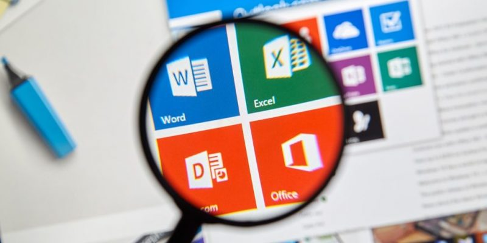

¿Que es la Informática?
Es la ciencia que estudia los métodos y técnicas para almacenar, procesar y transmitir información de manera automatizada, y más específicamente, en formato digital empleando sistemas computarizados. No existe realmente una definición única y universal de lo que la informática es, quizá porque se trata de una de las ciencias de más reciente origen, aunque de desarrollo más vertiginoso y desenfrenado. Por eso en muchos espacios académicos suelen diferenciar entre esta disciplina y las ciencias de la computación (o la ingeniería informática), considerando que estas últimas posen un abordaje más teórico de la materia, mientras que la informática tiene siempre un costado práctico y aplicado, vinculado con los dispositivos electrónicos.

Caracteristicas:
- Su objeto de estudio puede resumirse en el tratamiento automatizado de la información mediante sistemas digitales computarizados.s
- Se propone tanto el abordaje teórico como el práctico de los sistemas informáticos, aunque no se trata de una ciencia experimental.
- Toma en préstamo el lenguaje formal de la lógica y la matemática para expresar las relaciones entre los sistemas de datos y las operaciones que estos ejecutan.
- Es una de las disciplinas científicas más jóvenes, surgida formalmente en la segunda mitad del siglo XX.
¿Para qué sirve la informática?
tiene como propósito clave el almacenamiento y la recuperación de información, lo cual ha sido una de las preocupaciones clave de la humanidad desde el inicio de los tiempos. En ese sentido, el primer sistema de almacenamiento fue la escritura misma, que permitía codificar mensajes y recuperarlos luego a través de marcas sobre una superficie. Vista así, la informática ha llevado ese mismo principio al máximo, creando sistemas y aparatos que almacenen, produzcan, transmitan y reproduzcan información de manera masiva, eficiente y veloz. No en balde la informática interviene hoy en día en prácticamente todos los demás campos del saber de un modo o de otro.
